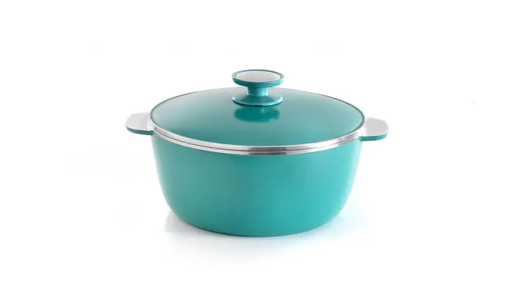
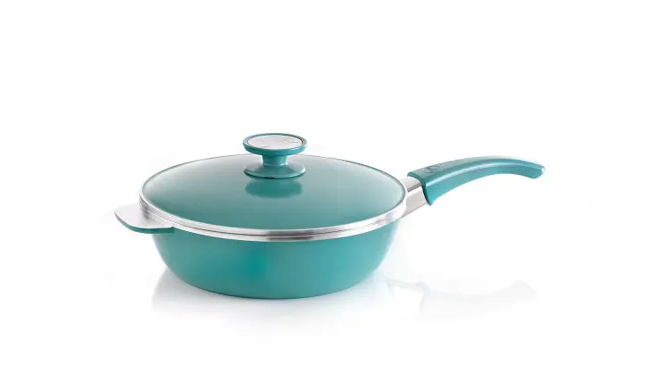
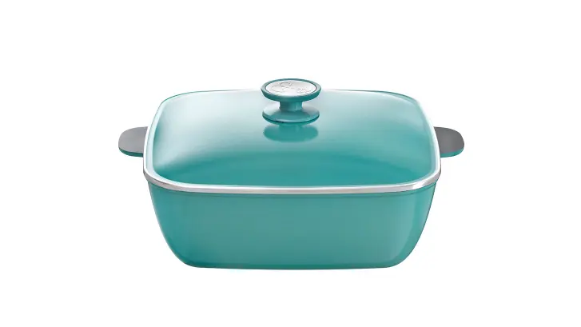

Cacerola 24Cm

Estas Cacerolas son las más vendidas de nuestra línea de productos y gracias a los complementos que hemos desarrollado, permiten disfrutar de todas las funciones y beneficios de las piezas Essen. Son una excelente opción ya que se adaptan a una familia de entre 4 y 5 integrantes resolviendo absolutamente todas las posibilidades de preparaciones y cocciones tanto dulces como saladas: desde tortas a panes, carnes, cazuelas, guisados y sopas, etc. Además tienen la opción de incorporar complementos:
- Savarín: Para la cocción de flanes, budines, soufflés, etc.
- Vaporizador: Para preparar todo tipo de carnes, verduras y frutas al vapor.
- Cestillo freidor: Para freír milanesas, papas fritas, pastelitos, tempura de vegetales, etc.
En conjunto con la Sartén de 24cm y la Bifera, otorgan una solución para desarrollar los menús más completos de forma práctica, rica y saludable.
Sarten 24cm

En esta Sartén podrá realizar recetas para compartir con 4 o 5 comensales. En conjunto con la Cacerola con asas de 24 cm (diámetro) y la Bifera, son un equipo ideal para satisfacer las necesidades de la cocina de matrimonios jóvenes con hijos pequeños, ya que sus capacidades son óptimas para alimentar a una familia promedio de 4 integrantes. Podrá lucirse con la cocción de: tortas, tartas, carnes, pescados, verduras rellenas, salsas, etc.
Caserola Cuadrada 30cm

Diseño y estilo en un solo producto. Su capacidad se destaca ya que permite desarrollar cocciones para entre 6 y 8 comensales.
cuadrada 30cm Su forma cuadrada permite acomodar perfectamente porciones grandes de carne y guarniciones de forma muy sencilla. Además, por la amplitud de sus medidas facilita la manipulación de los ingredientes durante la cocción.
Incorporando las Budineras para cacerolas cuadradas, podrás preparar budines, terrinas, panes etc. de forma elegante, rica y fácil.
Flip 2.1

La nueva ESSEN FLIP 2.1 presenta una renovada y cuidadosa estética con un recubrimiento más oscuro. Conserva las cualidades únicas que la han hecho imprescindible, aporta estilo y elegancia, alineada al resto de los productos que conforman la línea.
La FLIP 2.1 te permite preparar gran cantidad de recetas gracias a su multifuncionalidad. A su vez, tiene 2 cuerpos de capacidad diferente que te permiten cocinar infinitas posibilidades.
Tiene una capacidad de 2 litros, ideal para dos comensales, y posee recubrimiento antiadherente interior y exterior NOVA TRIMIUM de máxima antiadherencia, resistencia y fácil limpieza.
Además, posee un mango con cierre traba dial, que logra un cierre seguro y permite realizar un giro "flip" firme. La innovación en su sistema de bisagras, permite una mayor facilidad en el desmolde y la limpieza.